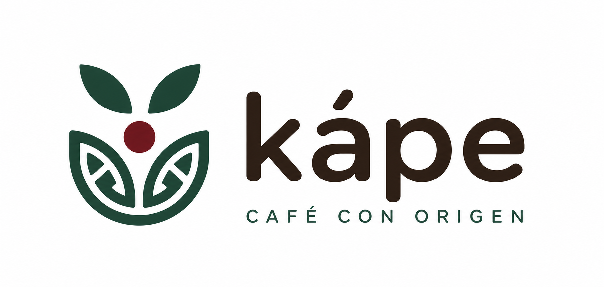

Kápe
Ecommerce enfocado en la venta de café mexicano, que busca reducir el intermediarismo e impulsar el pago justo a los productores.
Ver Proyecto GitHubMe apasiona desarrollar soluciones tecnológicas que contribuyan al desarrollo sostenible, integrando mi experiencia en planificación agropecuaria con el desarrollo de software.
Descargar CV GitHub Contáctame
Desarrolladora Java Full Stack con una fuerte base en Planificación y SIG. Me apasiona crear software donde la tecnología, el análisis espacial y los datos se cruzan para resolver problemas del mundo real.
Lo que hago:
💠Código & Desarrollo: Creo aplicaciones con Java aplicando metodologías ágiles (Scrum).
💠Análisis & SIG: Conecto el mundo del desarrollo web con la gestión de información geográfica y espacial.
💠Visión Estratégica: Analizo datos para respaldar la toma de decisiones clave.
💠Siempre aprendiendo, explorando nuevas tecnologías y lista para el siguiente reto técnico.

Ecommerce enfocado en la venta de café mexicano, que busca reducir el intermediarismo e impulsar el pago justo a los productores.
Ver Proyecto GitHubEcommerce enfocado en la venta de articulos para el ciclismo, desde bicicletas, equipo y accesorios.
Ver Proyecto GitHubloading...
Ver Proyecto GitHub
Mi trayectoria en la planificación para el desarrollo agropecuario
me demostró el impacto real que tiene la tecnología.
Decidir aprender desarrollo de software y adentrarme en el ecosistema de Java nace de esa visión:
combinar la programación con el sector agropecuario para crear soluciones con propósito.
Crecimiento y Fortalezas
Al inicio, la programación parecía un reto complejo.
Hoy cuento con bases sólidas que me permiten entender el flujo de desarrollo,
adoptando herramientas clave para mi evolución:
Mentalidad de aprendizaje: Adaptabilidad y resiliencia para resolver problemas.
Trabajo en equipo: Colaboración y comunicación para construir mejores proyectos.
Bases técnicas: Comprensión de la lógica de programación y la estructura en Java.
Áreas de Mejora
Reconozco que el crecimiento es continuo. Actualmente trabajo en:
Dominar conceptos avanzados como la integración de APIs y algoritmos.
Profundizar en el control de versiones con Git y GitHub.
Desarrollar mayor paciencia y gestión emocional.
Metas:
Corto Plazo ➡️ Graduarme del bootcamp de Generation | Practicar diario | Mejorar mi inglés.
Largo Plazo ➡️ Fusionar el desarrollo Java y SIG para crear tecnología accesible e innovadora
que impulse a los productores agropecuarios en México.
La frase que me motiva todos los días:
"El campo es mi pasión y la tecnología mi herramienta; programo con el firme propósito de crear soluciones reales que transformen la vida de quienes hacen florecer la tierra."